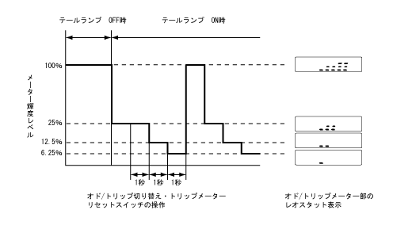
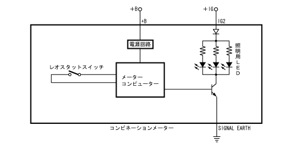

レオスタット
●
テールランプ ON時にオド/トリップ切り替え・トリップメーターリセットスイッチを押してレオスタット表示にした状態でスイッチを長押しすることにより，1秒ごとにメーター輝度が段階的に切り替わります。任意の輝度でスイッチを離すことによりメーター輝度の調整を行うことができます。なお，テールランプ ON時でもテールランプ OFF時と同様の最高輝度に調整することもできます。
調光特性
・
テールランプ ON時に，レオスタット表示にした状態でオド/トリップ切り替え・トリップメーターリセットスイッチを長押し（約1秒以上）することにより，1秒ごとにメーター輝度を段階的に調整できます。
・
調光範囲は，最高輝度を100％とした場合，25％→12.5％→6.25％→100％としました。

レオスタット作動
・
メーターコンピューターは，テールランプリレーのON/OFFによりテールランプ ONを入力しています。
・
メーターコンピューターは，テールランプ ON状態でオド/トリップメーターがレオスタット表示時に，オド/トリップ切り替え・トリップメーターリセットスイッチの操作を検知すると，スイッチの操作に応じた輝度レベル切り替えプログラムに従ってオプティトロンメーターの輝度レベルを切り替えます。

 調光特性
調光特性
 レオスタット作動
レオスタット作動